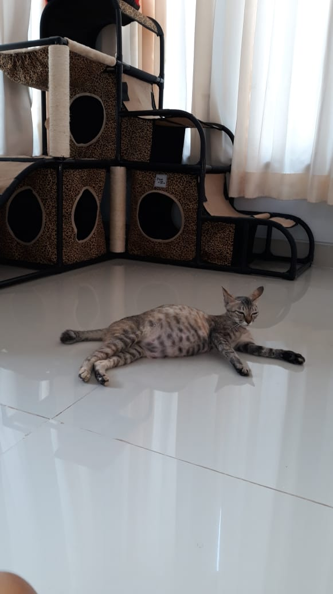
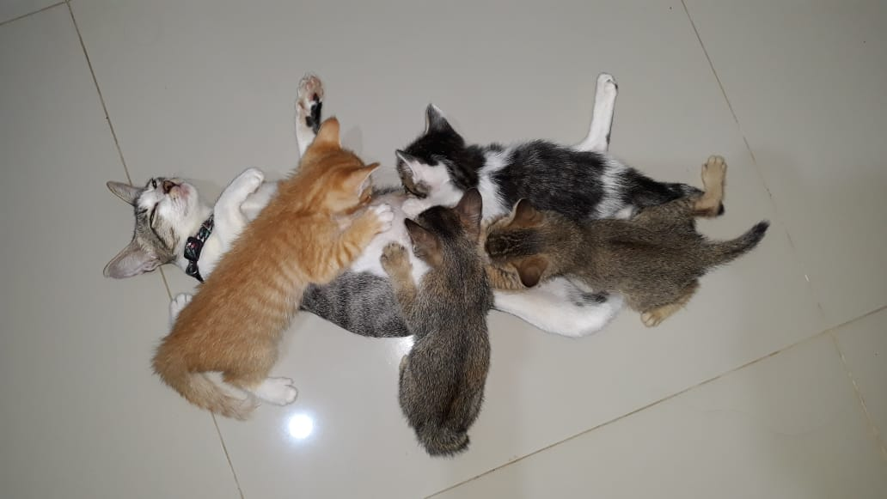

After living 2 months, finally decided to take a pair of cats. Named them Cloudy and Sky. Another joy in my life have been brought by them. Now they are about 8 months old. They had been given birth once each of them. 4 kittens from Cloudy and 4 kittens from Sky. So I had 10 cats in total. haha I know it's quite lot.
My Fur Babies  